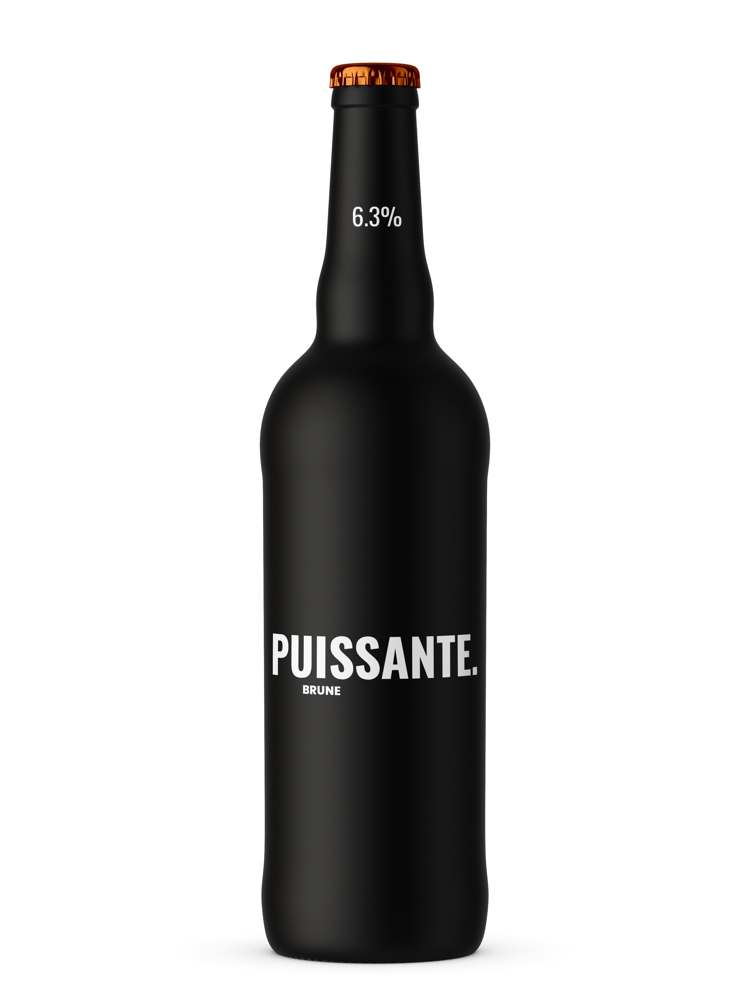
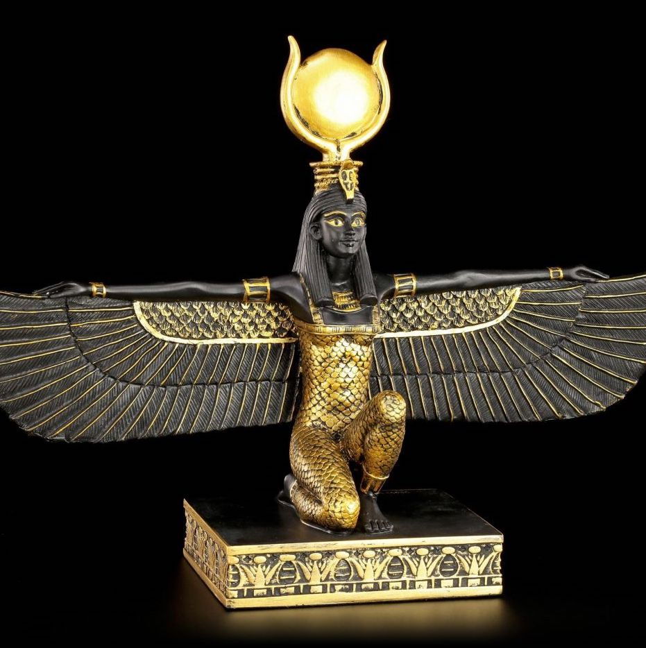

Il était une fois Isis, une déesse égyptienne. Après qu’ait
été oubliée au soleil une décoction d’orge germé dans l’eau du Nil, ce
qui créa la première bière, elle plaça son brassage sous sa protection.
C’est de cette histoire, celle de cette déesse, que nous tirons toute la
nôtre, l’histoire de notre collectif de vulgarisation
scientifique, l’histoire d’ISIS.
Vous avez surement goûté de la bière au moins une fois dans votre vie,
vous avez peut-être même apprécié découvrir différents types de bière.
Laissez-nous donc vous informer au sujet de la boisson maltée, sous la
tutelle de la déesse millénaire avec qui tout a commencé.
Sur notre site, vous retrouverez des vidéos informatives,
des animations interactives, des portraits de
grands noms féminins du monde brassicole ainsi qu’une sélection de
différentes bières locales.
N'hésitez pas à venir nous visiter, que vous soyiez peu buveurs,
amateurs de longue date ou simplement curieux !

LES FEMMES ONT MARQUÉ
L'HISTOIRE DE LA BIÈRE
Hildegarde von Bingen
Hildegarde von Bingen née en 1098 est une abbesse botaniste du
Moyen-Âge. C’est elle qui a découvert les vertus du houblon. Elle a
permis la découverte de nouvelles sortes de bière.
DÉCOUVRIR

Deesse Isis
Isis est sans doute l’une des déesses les plus populaires du panthéon
égyptien. Elle est la déesse de l'Orge. C’est grâce à elle que Osiris
a pu apprendre les techniques de brassage.
DÉCOUVRIR
Anne-Charlotte Cheminal
Anne-Charlotte Cheminal est une francaise qui en janvier 2022 a créé
une marque de bière bio-féministe : La Soro. Elle a également ouvert
en janvier 2022 une boutique à Lyon.
DÉCOUVRIR